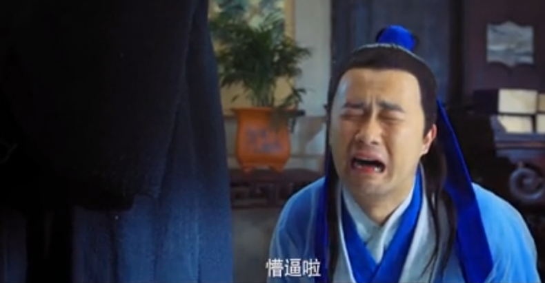

3.padding应设置给父元素；
4.如果不想改变元素大小，应在原始设置的宽度或者高度上减去添加的padding值的2倍
5.1个值 4个方向 2个值 上下 左右 3个 上 左右 下
w=300+20+50+200 h=300+10+30+200
border :边框
1.会把边框的像素添加在盒子原有的大小之上。
2.一个border 代表4个方向。 border-left border-right border-top border-bottom
3.border-width:边框宽度 border-color:边框颜色 border-style：线性
margin:外边距
指的是两个元素之间的距离；有可能是包含，也可以是并列
1.一个margin 4个方向
2.会影响盒子的实际大小 会 以空白区域出现

fdfdsf
fdffdf
fdfd
fdf